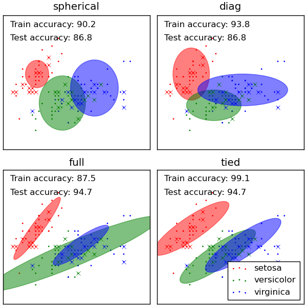

GMM classification¶
Demonstration of gmm for classification.
Plots predicted labels on both training and held out test data using a variety of GMM classifiers on the iris dataset.
Compares GMMs with spherical, diagonal, full, and tied covariance matrices in increasing order of performance. Although one would expect full covariance to perform best in general, it is prone to overfitting on small datasets and does not generalize well to held out test data.
On the plots, train data is shown as dots, while test data is shown as crosses. The iris dataset is four-dimensional. Only the first two dimensions are shown here, and thus some points are separated in other dimensions.

Python source code: plot_gmm_classifier.py
print __doc__
# Author: Ron Weiss <ronweiss@gmail.com>, Gael Varoquaux
# License: BSD Style.
# $Id$
import pylab as pl
import matplotlib as mpl
import numpy as np
from scikits.learn import datasets
from scikits.learn.cross_val import StratifiedKFold
from scikits.learn.mixture import GMM
def make_ellipses(gmm, ax):
for n, color in enumerate('rgb'):
v, w = np.linalg.eigh(gmm.covars[n][:2, :2])
u = w[0] / np.linalg.norm(w[0])
angle = np.arctan(u[1]/u[0])
angle = 180 * angle / np.pi # convert to degrees
v *= 9
ell = mpl.patches.Ellipse(gmm.means[n, :2], v[0], v[1], 180 + angle,
color=color)
ell.set_clip_box(ax.bbox)
ell.set_alpha(0.5)
ax.add_artist(ell)
iris = datasets.load_iris()
# Break up the dataset into non-overlapping training (75%) and testing
# (25%) sets.
skf = StratifiedKFold(iris.target, k=4)
# Only take the first fold.
train_index, test_index = skf.__iter__().next()
X_train = iris.data[train_index]
y_train = iris.target[train_index]
X_test = iris.data[test_index]
y_test = iris.target[test_index]
n_classes = len(np.unique(y_train))
# Try GMMs using different types of covariances.
classifiers = dict((x, GMM(n_states=n_classes, cvtype=x))
for x in ['spherical', 'diag', 'tied', 'full'])
n_classifiers = len(classifiers)
pl.figure(figsize=(3*n_classifiers/2, 6))
pl.subplots_adjust(bottom=.01, top=0.95, hspace=.15, wspace=.05,
left=.01, right=.99)
for index, (name, classifier) in enumerate(classifiers.iteritems()):
# Since we have class labels for the training data, we can
# initialize the GMM parameters in a supervised manner.
classifier.means = [X_train[y_train == i, :].mean(axis=0)
for i in xrange(n_classes)]
# Train the other parameters using the EM algorithm.
classifier.fit(X_train, init_params='wc', n_iter=20)
h = pl.subplot(2, n_classifiers/2, index + 1)
make_ellipses(classifier, h)
for n, color in enumerate('rgb'):
data = iris.data[iris.target == n]
pl.scatter(data[:,0], data[:, 1], 0.8, color=color,
label=iris.target_names[n])
# Plot the test data with crosses
for n, color in enumerate('rgb'):
data = X_test[y_test == n]
pl.plot(data[:, 0], data[:, 1], 'x', color=color)
y_train_pred = classifier.predict(X_train)
train_accuracy = np.mean(y_train_pred.ravel() == y_train.ravel()) * 100
pl.text(0.05, 0.9, 'Train accuracy: %.1f' % train_accuracy,
transform=h.transAxes)
y_test_pred = classifier.predict(X_test)
test_accuracy = np.mean(y_test_pred.ravel() == y_test.ravel()) * 100
pl.text(0.05, 0.8, 'Test accuracy: %.1f' % test_accuracy,
transform=h.transAxes)
pl.xticks(())
pl.yticks(())
pl.title(name)
pl.legend(loc='lower right', prop=dict(size=12))
pl.show()